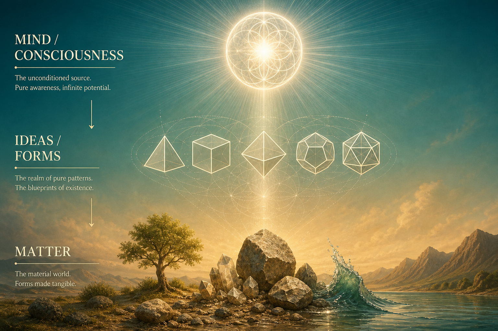
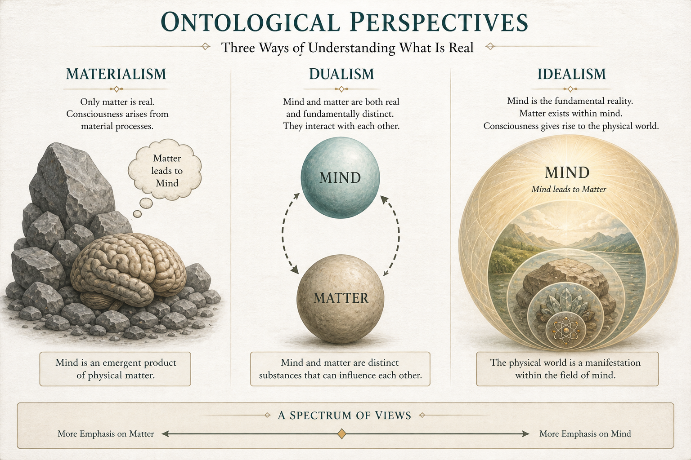
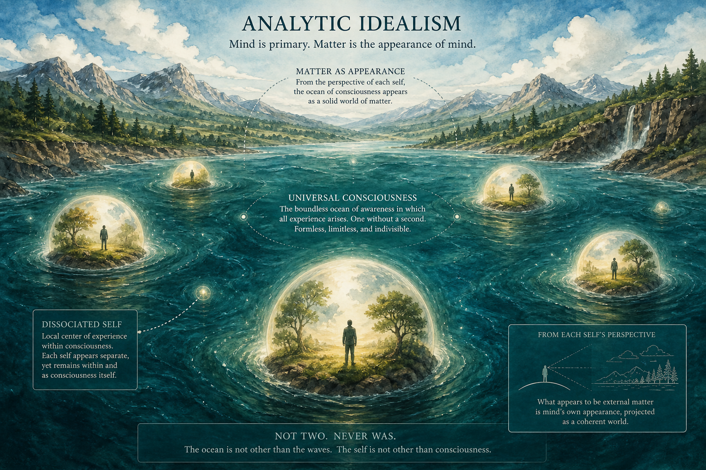
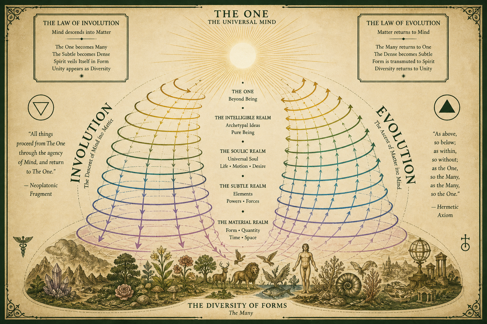

Реферат · онтология сознания
Mind leads to matter
Концепция онтологической первичности ума (сознания) по отношению к материи: материальный мир понимается как производный, явленный или «нисходящий» слой ментальной реальности — а не как её первоисточник.
1. Тезис и формулировка
Фраза Mind leads to matter («ум ведёт к материи», «сознание предшествует материи») — это сжатая формула идеализма в онтологии: фундаментальным слоем реальности считается ментальное (сознание, идея, дух, универсальный ум), а физический мир — следствие, явление, представление или эманация этого слоя.
Важно отличать эту формулу от бытового «mind over matter» («сила воли над телом»). Здесь речь не о мотивационном лозунге, а о порядке бытия: что первично — материя или ум? В идеалистической модели стрелка идёт так:
Сознание (или универсальный ум) → паттерны/формы/идеи → то, что мы называем материей. Схема эманации / явления (см. иллюстрацию ниже)

В аналитической философии сознания та же идея часто формулируется так: если phenomenal consciousness (то, «каково это» — быть) принять за онтологический примитив, то физические объекты можно трактовать как структуры внутри или «снаружи» сознания — но не как субстанцию, из которой сознание возникает как эпифеномен [Kastrup 2017] [SEP: Idealism].
2. Место на карте онтологий
Проблема «ум–тело» (mind–body problem) задаёт спектр ответов [OECS]:
| Позиция | Что первично | Как объясняется другое |
|---|---|---|
| Материализм / физикализм | Материя / физические процессы | Сознание — продукт мозга (emergent или тождественно нейронным процессам) |
| Дуализм | Два рода субстанций/свойств | Нужна теория взаимодействия (классическая трудность Декарта) |
| Идеализм Mind leads to matter |
Ум / сознание | Материя — явление, идея, представление или эманация ума |
| Панпсихизм / нейтральный монизм | Общий фундамент с ментальным аспектом | Материя и ум — два аспекта или комбинации одного субстрата |

Классический «трудный вопрос сознания» Дэвида Чалмерса [Chalmers 1995] особенно остёр для материализма: почему вообще есть субъективный опыт, если всё сводится к объективным физическим фактам? Идеализм переворачивает задачу: не «как материя порождает ум», а «почему ум является нам в форме материи».
3. Исторические корни
3.1. Платон и неоплатонизм
У Платона чувственный мир — тень мира идей (Государство, аллегория пещеры). У Плотина (Эннеады) разворачивается эманация: Единое → Ум (Nous) → Душа → материальный космос. Материя здесь — крайняя степень «отдаления» от источника света, а не самостоятельная первопричина [SEP: Idealism].
3.2. Беркли: esse est percipi
Джордж Беркли (1710) утверждает: вещи существуют как идеи в уме; «быть — значит быть воспринимаемым». Материальная субстанция как нечто «вне всякого ума» объявляется ненужной и непостижимой. Стабильность мира обеспечивается божественным умом, а не бездушной материей [Berkeley 1710] [SEP: Idealism].
3.3. Немецкий идеализм
У Канта пространство, время и категории — формы нашего познания; «вещь в себе» остаётся за пределами опыта. У Гегеля реальность разворачивается как Absolute Spirit — рациональный процесс, в котором природа — момент самораскрытия духа [SEP: Idealism].
3.4. Восточные параллели
В Advaita Vedānta Брахман (чистое сознание) — единственная реальность; мир имён и форм (nāma-rūpa) — явление на фоне этого сознания. Формула ātman = brahman смыкается с тезисом «ум (как универсальное сознание) ведёт к материи (как явлению)». В буддийской мысли Нагарджуны ум и тело взаимозависимы, но нет самостоятельной материальной субстанции вне процессов опыта [Philosophy of mind].
4. Современные версии
4.1. Аналитический идеализм Бернардо Каструпа
Каструп предлагает строго аналитическую онтологию: единственный примитив — универсальное феноменальное сознание. Индивидуальные субъекты — диссоциированные альтеры этого поля (аналогия с DID). «Неодушевлённый» мир — extrinsic appearance (внешнее явление) ментальной активности за пределами нашей диссоциативной границы; другие живые существа — явления других альтеров [Kastrup 2017] [Kastrup 2019].
Matter is a representation or appearance of what is, in and of itself, mental processes. Bernardo Kastrup, интервью Beshara Magazine («Mind over Matter»)

4.2. Conscious Realism Дональда Хоффмана
Хоффман утверждает: объективный мир состоит из conscious agents; то, что мы видим как пространство, объекты и «материю», — интерфейс (как иконки рабочего стола), приспособленный эволюцией для приспособленности, а не для истины. Сознание первично; материя и поля зависят от него [Hoffman, Conscious Realism].
4.3. Чем это не является
«Mind leads to matter» в строгих формулировках не означает, что произвольная фантазия мгновенно меняет физику лаборатории. В берклианстве, у Каструпа и у Хоффмана подчёркивается: мир общий, закономерен и не сводится к капризу личного эго. Меняется онтологический статус материи (явление ума), а не отменяются эмпирические регулярности.
5. Связь с учением Manly P. Hall
В проекте Theory of the Game тезис прямо перекликается с лекцией Hall «Universal and Personal Consciousness» (1958): сознание — не побочный продукт мозга, а фундаментальная сила; универсальное сознание «лучится» в материальную вселенную «как свет из источника»; тело — «хвостовое приложение сознания» (tail-end appendage) [Hall 1958].
Космический сюжет Hall — инволюция (единая жизнь дробится на множество форм, энергия «привязывается» к материи) и эволюция (возвращение многообразия к единству). Это классическая эманативная схема «mind → matter» и обратный путь «matter → realization of mind».

В эссе и лекциях Hall ум часто описывается как средний план между духом и материей (ртуть алхимии, Гермес): сознание управляет телом через ментальную природу; мозг — «продолжение ума вниз в материю» [Hall, Mental and Spiritual Alchemy] [Hall, Healing: The Divine Art].
6. Аргументы «за» и критика
Почему тезис привлекателен
- Экономия онтологии. Мы непосредственно знаем только опыт; материя «вне опыта» — теоретический конструкт. Идеализм начинает с данного [Kastrup 2017].
- Обход hard problem. Не нужно выводить qualia из не-ментальных частиц; ментальное уже фундаментально [Chalmers 1995].
- Единый мир без солипсизма. Современные версии (Каструп, Хоффман) сохраняют межсубъектную реальность через трансперсональный ум / сеть агентов.
Основные возражения
- Успех физики. Материалисты указывают на предсказательную силу физики и нейронауки: вмешательства в мозг систематически меняют опыт. Идеалист отвечает: корреляция мозг–опыт объясняется тем, что мозг — образ ментального процесса в явлении, а не его производитель [Kastrup 2017].
- Риск субъективизма. Если плохо провести различие личного и универсального ума, тезис скатывается в «мир = моя фантазия». Классические и аналитические идеализмы специально блокируют этот ход (Бог Беркли; dissociation Каструпа; agents Хоффмана).
- Эпистемическая скромность науки. Многие философы предпочитают методологический натурализм без сильной онтологии; Mind leads to matter остаётся метафизической гипотезой, а не экспериментальным фактом.
7. Источники
- Guyer, P., & Horstmann, R.-P. (rev.). Idealism. Stanford Encyclopedia of Philosophy. plato.stanford.edu/entries/idealism
- Berkeley, G. (1710). A Treatise Concerning the Principles of Human Knowledge.
- Chalmers, D. J. (1995). Facing up to the problem of consciousness. Journal of Consciousness Studies, 2(3), 200–219.
- The Mind–Body Problem. Open Encyclopedia of Cognitive Science (MIT). oecs.mit.edu/pub/7fjwb5k3
- Kastrup, B. (2017). An Ontological Solution to the Mind–Body Problem. Philosophies, 2(2), 10. doi / MDPI
- Kastrup, B. (2019). Analytic Idealism: A consciousness-only ontology (Doctoral dissertation, Radboud University). PDF
- Kastrup, B. Interview: «Mind over Matter». Beshara Magazine. besharamagazine.org
- Hoffman, D. D. Conscious Realism and the Mind–Body Problem. UCI page
- Philosophy of mind. Wikipedia (overview of monism / idealism / panpsychism). wikipedia.org
- Hall, M. P. (1958, July 16). Universal and Personal Consciousness (Exploring Dimensions of Consciousness, lecture 1). Los Angeles. Recording via MindPodNetwork: youtube.com/watch?v=ejIt-XSKUkc
- Hall, M. P. Mental and Spiritual Alchemy (manuscript lecture). manlyphall.info
- Hall, M. P. Healing: The Divine Art (раздел о природе ума). Excerpts: rapeutation.com